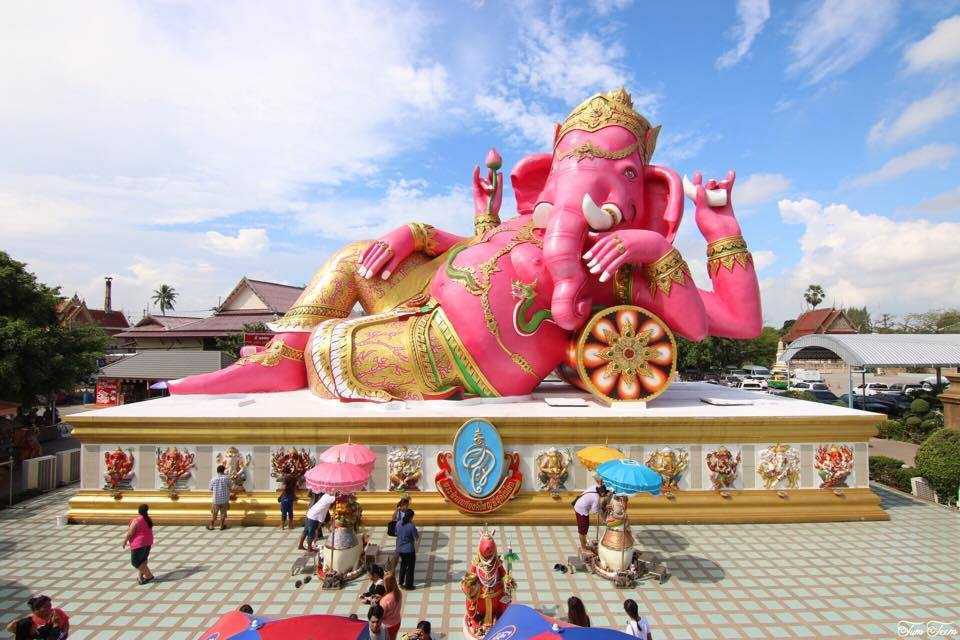

ข้อมูลสถานที่ท่องเที่ยว

วัดโสธรวรารามวรวิหาร
วัดโสธรวรารามวรวิหาร (หรือที่เรียกสั้นๆ ว่า "วัดหลวงพ่อโสธร") เป็นวัดเก่าแก่และศักดิ์สิทธิ์คู่บ้านคู่เมืองของจังหวัดฉะเชิงเทรา
ซึ่งมีชื่อเสียงโด่งดังจากความศรัทธาของประชาชนที่มีต่อ หลวงพ่อโสธร พระพุทธรูปศักดิ์สิทธิ์ที่ประดิษฐานภายในวัด
ประวัติความเป็นมา
วัดแห่งนี้มีชื่อเสียงจากเรื่องราวความศักดิ์สิทธิ์ของ หลวงพ่อโสธร ซึ่งเป็นพระพุทธรูปที่มีตำนานเล่าขานว่า ลอยน้ำมา และมาประดิษฐาน ณ วัดโสธร
โดยมีลักษณะเป็นพระพุทธรูปปางสมาธิ หล่อด้วยทองสัมฤทธิ์ ขนาดหน้าตักกว้าง 1.65 เมตร สูง 1.98 เมตร แต่ปัจจุบันองค์จริงถูกพอกปูนทับไว้และลงรักปิดทอง
จุดเด่น
1. หลวงพ่อโสธร
• พระพุทธรูปปางสมาธิขนาดหน้าตักกว้าง 1.65 เมตร สูง 1.98 เมตร
• เชื่อกันว่าหลวงพ่อโสธรสามารถดลบันดาลให้สมปรารถนา โดยเฉพาะเรื่องการค้าขายและโชคลาภ
2. พระอุโบสถหลังใหม่
• สร้างด้วยสถาปัตยกรรมแบบร่วมสมัย งดงามตระการตาด้วยหินอ่อนสีขาว
• ภายในประดิษฐานหลวงพ่อโสธรจำลอง และมีจิตรกรรมฝาผนังที่งดงาม
3. พระวิหารหลวงพ่อโสธรองค์จริง
• ประดิษฐานอยู่ภายในวิหารเก่า เป็นจุดที่ผู้คนมากราบไหว้เพื่อขอพร
กิจกรรมที่นิยม
• สักการะหลวงพ่อโสธร เพื่อขอพรให้สมหวังในเรื่องต่างๆ
• ปิดทองหลวงพ่อโสธรจำลอง เพื่อเสริมสิริมงคล
• แก้บน โดยการถวายไข่ต้ม พวงมาลัย หรือการจุดประทัด ซึ่งถือเป็นประเพณีที่นิยม
• ทำบุญถวายสังฆทานและปิดทองพระประจำวันเกิด เพื่อความเป็นสิริมงคล
• เยี่ยมชมศิลปกรรมภายในพระอุโบสถ และถ่ายรูปเป็นที่ระลึก
เวลาเปิดทำการ
• วันจันทร์ - วันศุกร์ เวลา 07:00 น. - 16:30 น.
• วันเสาร์ - วันอาทิตย์ เวลา 07:00 น. - 17:00 น.
================

อุทยานพระพิฆเนศ คลองเขื่อน
อุทยานพระพิฆเนศ คลองเขื่อน ตั้งอยู่ที่อำเภอคลองเขื่อน จังหวัดฉะเชิงเทรา เป็นสถานที่ประดิษฐานพระพิฆเนศปางยืนที่ทำจากสำริด ซึ่งมีความสูงรวมฐานถึง 39 เมตร ถือเป็นพระพิฆเนศปางยืนที่ใหญ่ที่สุดในโลก
ประวัติความเป็นมา
อุทยานแห่งนี้ก่อตั้งขึ้นในปี พ.ศ. 2551 โดย พล.ต.อ. สมชาย วาณิชเสนี ประธานมูลนิธิพระพิฆเนศคลองเขื่อนฯ และมูลนิธิทองประทานฯ มีวัตถุประสงค์เพื่อสร้างสิ่งศักดิ์สิทธิ์คู่บ้านคู่เมือง
ส่งเสริมการท่องเที่ยว และสร้างความเจริญให้กับชุมชนท้องถิ่น การก่อสร้างใช้เวลาประมาณ 4 ปี และเสร็จสมบูรณ์ในปี พ.ศ. 2555
จุดเด่น
1. พระพิฆเนศปางยืน
• องค์พระพิฆเนศทำจากสำริด มีความสูงรวมฐาน 39 เมตร พระหัตถ์ถือผลไม้ 4 ชนิด ได้แก่ มะม่วง กล้วย ยอดอ้อย และขนุน ซึ่งสื่อถึงความอุดมสมบูรณ์
2. สถาปัตยกรรมและบรรยากาศ
• อุทยานตั้งอยู่ริมฝั่งแม่น้ำบางปะกง บนพื้นที่กว่า 25 ไร่ ท่ามกลางธรรมชาติที่งดงามและอุดมสมบูรณ์
กิจกรรมที่นิยม
1. สักการะและขอพร
• ผู้มีจิตศรัทธามักมาไหว้พระพิฆเนศเพื่อขอพรด้านความสำเร็จและความเป็นสิริมงคล
2. เข้าร่วมพิธีพราหมณ์
• อุทยานจัดพิธีพราหมณ์ในวันเสาร์ อาทิตย์ และวันหยุดนักขัตฤกษ์ วันละ 3 รอบ เวลา 11.00 น., 14.00 น. และ 16.00 น.
เวลาเปิดทำการ
• วันจันทร์ - วันศุกร์ เวลา 09:00 น. - 17:30 น.
• วันเสาร์ - วันอาทิตย์ และวันหยุดนักขัตฤกษ์ เวลา 09:00 น. - 18:00 น.
================

ตลาดบ้านใหม่ 100 ปี
ตลาดบ้านใหม่ 100 ปี ตั้งอยู่ริมฝั่งตะวันตกของแม่น้ำบางปะกง ในจังหวัดฉะเชิงเทรา เป็นตลาดเก่าแก่ที่มีอายุมากกว่า 100 ปี ก่อตั้งขึ้นในสมัยรัชกาลที่ 5 โดยชุมชนชาวไทยเชื้อสายจีนที่มาตั้งรกรากและประกอบอาชีพค้าขายที่นี่
ประวัติความเป็นมา
ในอดีต ตลาดบ้านใหม่เป็นศูนย์กลางการค้าขายที่คึกคักของชุมชนริมน้ำ แต่เมื่อการคมนาคมทางบกเข้ามาแทนที่ ความสำคัญของตลาดก็ลดลง อย่างไรก็ตาม ในปี พ.ศ. 2547
ชุมชนได้ร่วมกันฟื้นฟูตลาดให้กลับมามีชีวิตชีวาอีกครั้ง เพื่อเป็นแหล่งท่องเที่ยวเชิงอนุรักษ์ทางวัฒนธรรม
จุดเด่น
1. สถาปัตยกรรมโบราณ
• อาคารบ้านเรือนที่ยังคงรักษารูปแบบดั้งเดิม สะท้อนถึงวิถีชีวิตและวัฒนธรรมของชุมชนชาวจีนในอดีต
2. อาหารและขนมโบราณ
• ตลาดบ้านใหม่เป็นแหล่งรวมอาหารอร่อยและขนมโบราณที่หาทานได้ยาก เช่น กาแฟโบราณ ขนมไทย และอาหารพื้นบ้าน
3. บรรยากาศริมแม่น้ำ
• ตั้งอยู่ริมแม่น้ำบางปะกง ทำให้มีบรรยากาศที่ร่มรื่นและเหมาะสำหรับการพักผ่อน
กิจกรรมที่นิยม
1. ชิมอาหารและขนมโบราณ
• นักท่องเที่ยวสามารถลิ้มลองอาหารและขนมที่มีรสชาติดั้งเดิม
2. ถ่ายภาพ
• บรรยากาศและสถาปัตยกรรมของตลาดเป็นฉากหลังที่สวยงามสำหรับการถ่ายภาพ
3. ล่องเรือชมแม่น้ำบางปะกง
• นักท่องเที่ยวสามารถล่องเรือเพื่อชมวิวและสัมผัสวิถีชีวิตของชุมชนริมน้ำ
เวลาเปิดทำการ
• วันเสาร์ กับ วันอาทิตย์ เวลา 09:00 น. - 18:00 น.
================

วัดสมานรัตนาราม
วัดสมานรัตนาราม ตั้งอยู่ริมแม่น้ำบางปะกง ในตำบลบางแก้ว อำเภอเมือง จังหวัดฉะเชิงเทรา เป็นวัดที่มีชื่อเสียงและเป็นแหล่งท่องเที่ยวสำคัญของจังหวัด
ประวัติความเป็นมา
วัดสมานรัตนารามเป็นวัดราษฎร์สังกัดคณะสงฆ์ฝ่ายธรรมยุติกนิกาย ตั้งอยู่ริมแม่น้ำบางปะกง ในตำบลบางแก้ว อำเภอเมืองฉะเชิงเทรา จังหวัดฉะเชิงเทรา มีเนื้อที่ตามหน้าโฉนดที่ตั้งวัด 26 ไร่ 3 งาน 50 ตารางวา
จุดเด่น
1. พระพิฆเนศปางนอนเสวยสุข
• องค์พระพิฆเนศสีชมพูขนาดใหญ่ที่สุดในประเทศไทย มีความสูง 16 เมตร ยาว 24 เมตร
2. สิ่งศักดิ์สิทธิ์อื่น ๆ
• ภายในวัดยังมีเทพเจ้าต่าง ๆ ให้สักการะ เช่น พระพรหม พระอินทร์ พระนารายณ์ พระศิวะ และพระแม่อุมาเทวี
กิจกรรมที่นิยม
1. สักการะสิ่งศักดิ์สิทธิ์
• นักท่องเที่ยวมักมาไหว้พระและเทพเจ้าต่าง ๆ เพื่อความเป็นสิริมงคล
2. ล่องเรือชมวิว
• สามารถนั่งเรือชมวิวแม่น้ำบางปะกงและสัมผัสบรรยากาศธรรมชาติ
3. ทำบุญและถวายสังฆทาน
• มีการทำบุญและถวายสังฆทานเพื่อเสริมดวงชะตา
เวลาเปิดทำการ
• เปิดทุกวัน และ เปิด 24 ชั่วโมง
================
.jpg)
วัดหงษ์ทอง (วัดกลางน้ำ)
วัดหงษ์ทอง หรือที่ชาวบ้านเรียกว่า "วัดกลางน้ำ" ตั้งอยู่ที่ตำบลสองคลอง อำเภอบางปะกง จังหวัดฉะเชิงเทรา เป็นวัดที่มีเอกลักษณ์โดดเด่นเนื่องจากตั้งอยู่กลางทะเล ทำให้เป็นสถานที่ท่องเที่ยวและปฏิบัติธรรมที่น่าสนใจ
ประวัติความเป็นมา
วัดหงษ์ทองก่อตั้งขึ้นเมื่อวันที่ 13 กันยายน พ.ศ. 2526 และได้รับพระราชทานวิสุงคามสีมาเมื่อวันที่ 12 กันยายน พ.ศ. 2529 โดยมีการก่อสร้างศูนย์พัฒนาจิต ศาลาปฏิบัติธรรมกรรมฐาน และเจดีย์ที่ยื่นไปในทะเล เพื่อเป็นสถานที่ปฏิบัติธรรมและสักการะของประชาชน
จุดเด่น
1. โบสถ์กลางทะเล
• โบสถ์สีทองที่ตั้งอยู่บนแท่นกลางทะเล เป็นสัญลักษณ์ที่โดดเด่นของวัด
2. พระธาตุคงคามหาเจดีย์
• เจดีย์ที่บรรจุพระธาตุอรหันต์ ตั้งอยู่ในทะเล ถือเป็นแห่งแรกของโลก
3. ซีวอล์ค (Sea Walk)
• สะพานพื้นกระจกที่ยื่นออกไปในทะเล ให้ผู้เข้าชมได้สัมผัสบรรยากาศและชมวิวทะเลแบบ 360 องศา
กิจกรรมที่นิยม
1. สักการะสิ่งศักดิ์สิทธิ์
• นักท่องเที่ยวมักมาไหว้พระและเจดีย์กลางทะเล เพื่อความเป็นสิริมงคล
2. เดินชมวิวบนซีวอล์ค
• สัมผัสประสบการณ์เดินบนสะพานพื้นกระจก ชมวิวทะเลและบรรยากาศรอบวัด
3. ถ่ายภาพ
• บรรยากาศและสถาปัตยกรรมของวัดเป็นฉากหลังที่สวยงามสำหรับการถ่ายภาพ
เวลาเปิดทำการ
• เปิดทุกวัน เวลา 06:00 น. - 18:00 น.
================